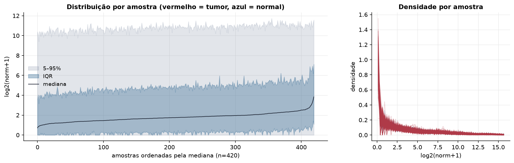
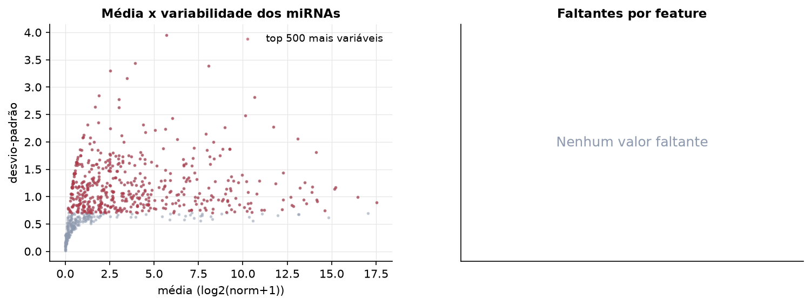
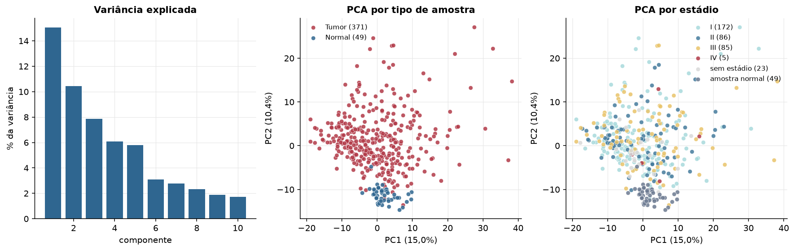
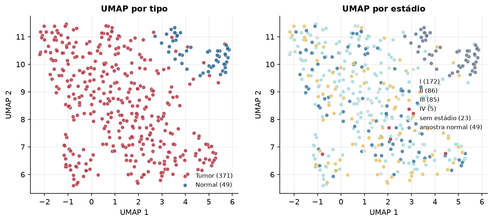
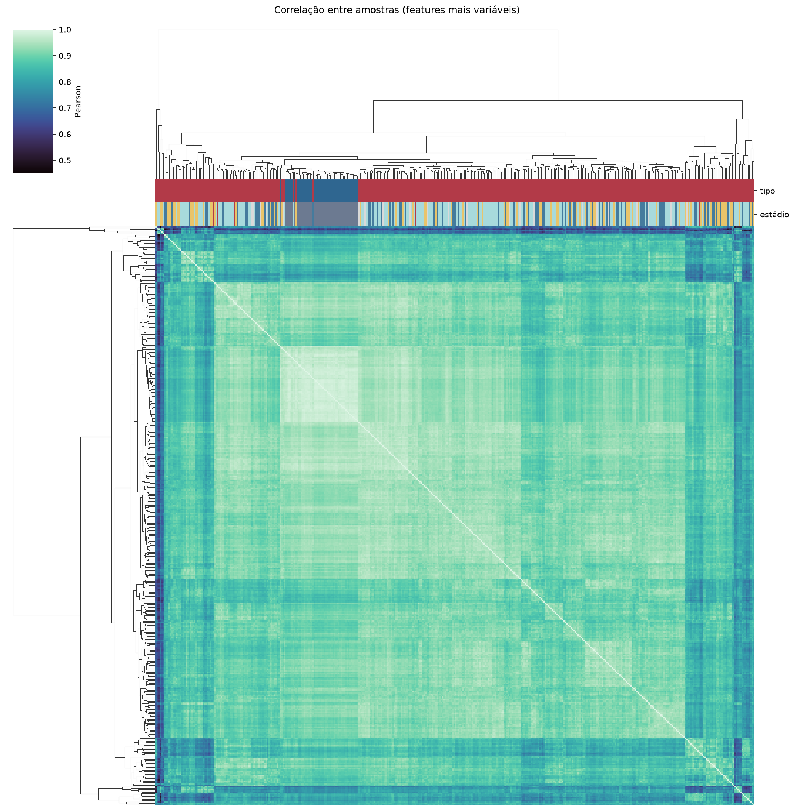
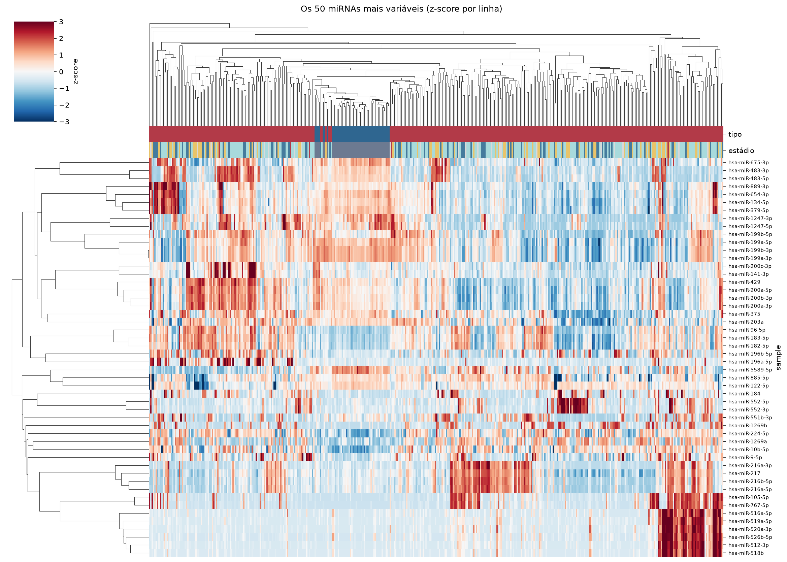
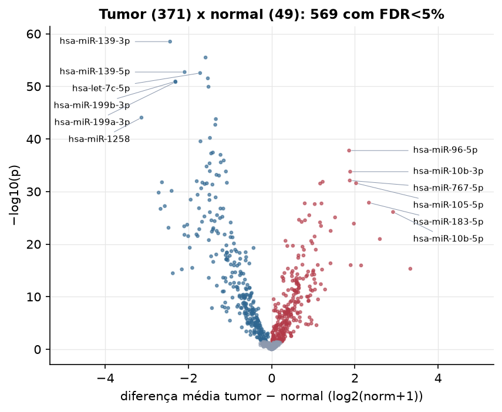
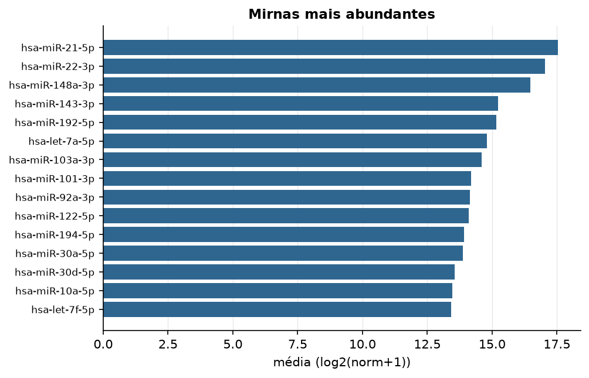

LIHC · miRNA-seq (PanCanAtlas)
miRNA maduro, normalizado e corrigido por lote (EB), log2(x+1) · gerado em 22/10/2026 00:18
743miRNAs
371amostras tumorais
49amostras normais
0,0%valores faltantes
Fonte: PanCanAtlas (pancanMiRs_EBadjOnProtocolPlatformWithoutRepsWithUnCorrectMiRs_08_04_16.xena)
Fita madura (5p/3p) já normalizada. As contagens brutas por precursor estão no relatório de contagens.
Principais resultados
- 743 miRNAs medidos em 420 amostras (371 tumorais e 49 normais); 0,0% dos valores estão faltando.
- Os dois primeiros componentes principais explicam 15,0% e 10,4% da variância das features mais variáveis.
- Correlação mediana entre amostras: 0,90.
- Amostras com correlação muito abaixo das demais (possíveis outliers técnicos): TCGA-BC-A10Z-01, TCGA-FV-A4ZQ-01, TCGA-BW-A5NQ-01, TCGA-CC-A5UC-01, TCGA-BC-A69H-01, TCGA-DD-A73F-01, TCGA-CC-A7II-01, TCGA-G3-A7M6-01, TCGA-ED-A8O5-01, TCGA-DD-AADD-01.
- Tumor x normal: 569 miRNAs diferentes com FDR < 5% (272 maiores no tumor, 297 maiores no normal; 48 pacientes têm o par tumor-normal).
- Mais aumentados no tumor: hsa-miR-96-5p, hsa-miR-10b-3p, hsa-miR-767-5p, hsa-miR-4746-5p, hsa-miR-105-5p, hsa-miR-589-5p, hsa-miR-183-5p, hsa-miR-1251-5p.
- Mais reduzidos no tumor: hsa-miR-139-3p, hsa-miR-125b-2-3p, hsa-miR-139-5p, hsa-let-7c-5p, hsa-miR-30a-3p, hsa-miR-199b-3p, hsa-miR-199a-3p, hsa-miR-99a-5p.
- Associações clínicas com p < 0,05 nos componentes principais: PC1 com sexo (p=0.00025); PC1 com idade (p=8.9e-05); PC2 com idade (p=7.8e-06); PC1 com sobrevida (p=0.017); PC3 com sobrevida (p=0.02).
Distribuição dos valores


Estrutura das amostras




Tumor x normal

Features mais diferentes entre tumor e normal
| sample | diferenca_tumor_menos_normal | t | p | fdr |
|---|---|---|---|---|
| hsa-miR-139-3p | -2.442 | -27.33 | 3.11e-59 | 2.31e-56 |
| hsa-miR-125b-2-3p | -1.589 | -20.659 | 3.26e-56 | 1.21e-53 |
| hsa-miR-139-5p | -2.093 | -22.914 | 1.92e-53 | 4.74e-51 |
| hsa-let-7c-5p | -1.72 | -20.625 | 2.94e-53 | 5.46e-51 |
| hsa-miR-30a-3p | -1.534 | -19.47 | 2.98e-52 | 4.43e-50 |
| hsa-miR-199b-3p | -2.315 | -19.362 | 1.16e-51 | 1.44e-49 |
| hsa-miR-199a-3p | -2.311 | -19.337 | 1.49e-51 | 1.58e-49 |
| hsa-miR-99a-5p | -1.518 | -18.114 | 1.19e-50 | 1.11e-48 |
| hsa-miR-1258 | -3.129 | -29.551 | 8.75e-45 | 7.22e-43 |
| hsa-miR-30c-2-3p | -1.342 | -17.518 | 1.66e-44 | 1.24e-42 |
| hsa-miR-125b-5p | -1.355 | -18.504 | 2.01e-43 | 1.36e-41 |
| hsa-miR-101-3p | -1.484 | -21.079 | 6.31e-41 | 3.91e-39 |
| hsa-miR-122-3p | -1.711 | -16.355 | 2.85e-40 | 1.63e-38 |
| hsa-miR-96-5p | 1.86 | 15.602 | 1.61e-38 | 8.54e-37 |
| hsa-miR-455-3p | -1.414 | -17.035 | 3.81e-38 | 1.88e-36 |
| hsa-miR-29c-3p | -1.455 | -18.291 | 5.68e-38 | 2.64e-36 |
| hsa-miR-26b-3p | -1.229 | -19.6 | 1.05e-37 | 4.57e-36 |
| hsa-let-7b-3p | -1.152 | -17.093 | 1.25e-36 | 5.15e-35 |
| hsa-miR-30e-3p | -1.223 | -18.691 | 2.82e-36 | 1.1e-34 |
| hsa-miR-130a-3p | -1.492 | -17.225 | 4.38e-36 | 1.63e-34 |
| hsa-miR-326 | -1.564 | -18.253 | 1.71e-35 | 6.03e-34 |
| hsa-miR-10a-5p | -1.486 | -15.99 | 1.33e-34 | 4.48e-33 |
| hsa-let-7g-3p | -1.1 | -16.848 | 1.54e-34 | 4.97e-33 |
| hsa-miR-10b-3p | 1.887 | 16.701 | 1.68e-34 | 5.19e-33 |
| hsa-miR-497-5p | -1.326 | -16.387 | 6.68e-34 | 1.99e-32 |
| hsa-miR-24-1-5p | -1.266 | -17.682 | 9.31e-34 | 2.66e-32 |
| hsa-miR-767-5p | 1.876 | 13.16 | 7.93e-33 | 2.18e-31 |
| hsa-miR-195-5p | -1.801 | -17.363 | 1.08e-32 | 2.87e-31 |
| hsa-miR-4746-5p | 1.226 | 15.869 | 1.41e-32 | 3.6e-31 |
| hsa-miR-424-5p | -2.637 | -21.114 | 1.73e-32 | 4.28e-31 |
Associação com variáveis clínicas
p-valores da associação dos três primeiros componentes principais (só tumores) com estádio (Kruskal-Wallis), sexo (Mann-Whitney), idade (Spearman) e sobrevida global (Cox univariado).
| estádio (Kruskal) | sexo (Mann-Whitney) | idade (Spearman) | sobrevida OS (Cox) | |
|---|---|---|---|---|
| PC1 (15,8%) | 0.054 | 0.000249 | 8.91e-05 | 0.017 |
| PC2 (9,3%) | 0.266 | 0.34 | 7.84e-06 | 0.122 |
| PC3 (6,9%) | 0.371 | 0.403 | 0.277 | 0.019 |
Mais abundantes
